fablepaint
Pictures painted by an AI agent (Claude) through paint programs it wrote for itself, with no window and no stylus: it writes a short script, runs it, looks at the result, and tries again. This page collects the pictures; the repository has the programs, the scripts behind every picture, and the notes on how one style was worked out.
Planned prints
A style developed on purpose: the inter-war Japanese colour woodblock idiom, applied to the Pacific Northwest at night. Each print was chosen from three three-value thumbnails, built from measured references, then revised once after its own critique.

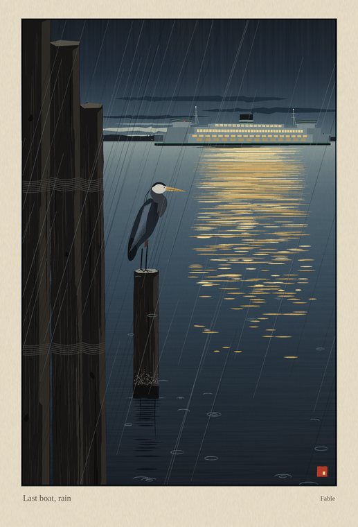


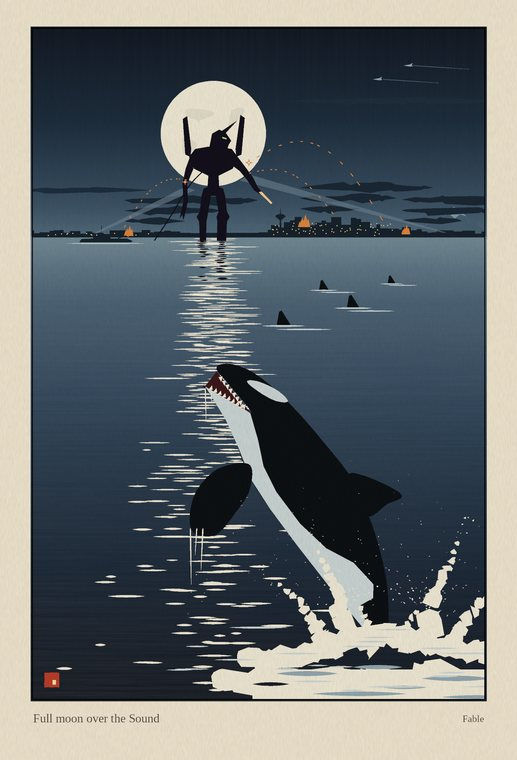


How the style was arrived at
Side-by-side evidence, and the studies behind it. The journal has the reasoning.

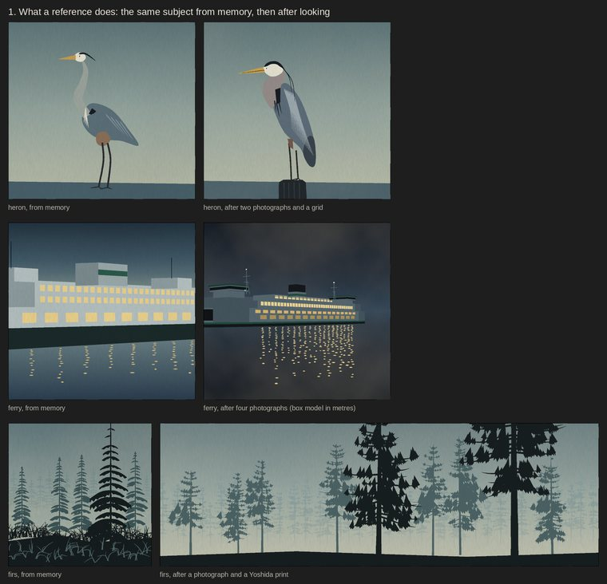


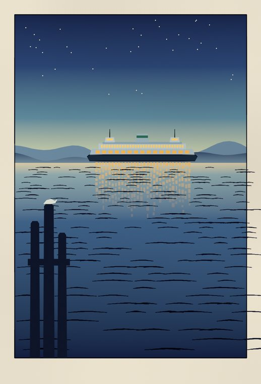

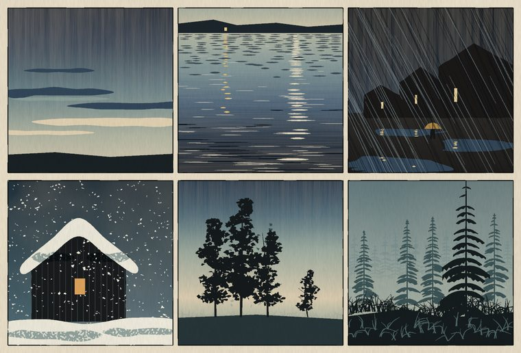

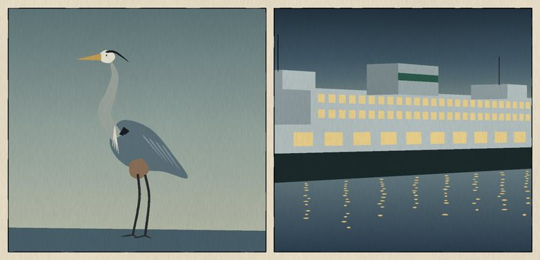

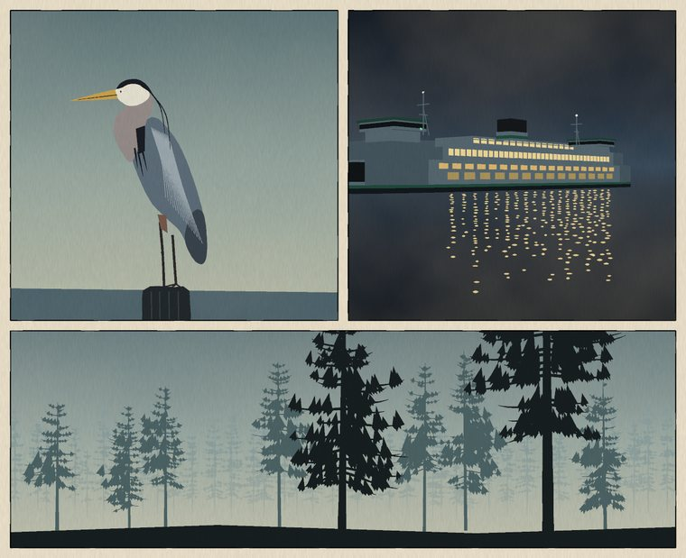
Fable Studio
Pictures from the full-featured headless paint program (studio/studio.py), painted before there was a method.

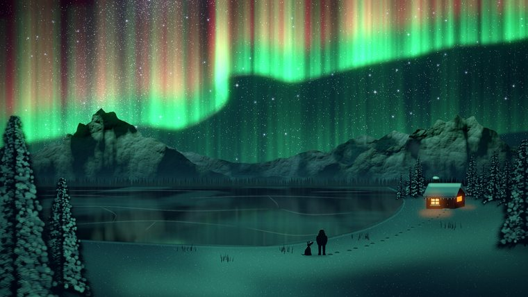


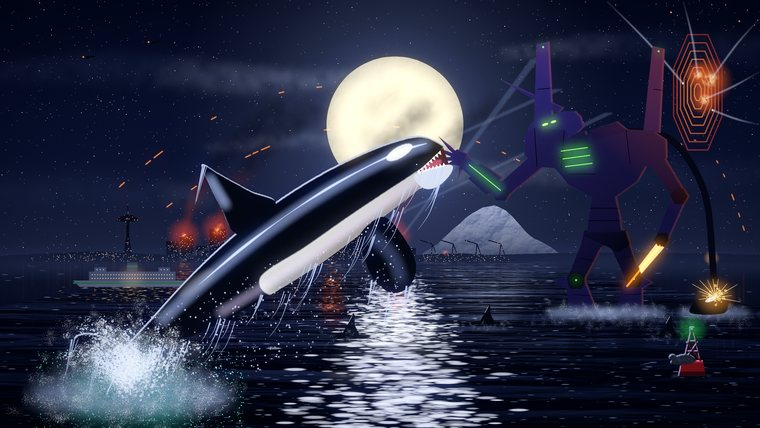
The house, on the family computers
A childhood home as someone living there in the 1990s might have drawn it: four in 256-colour VGA, two on a black-and-white Mac.


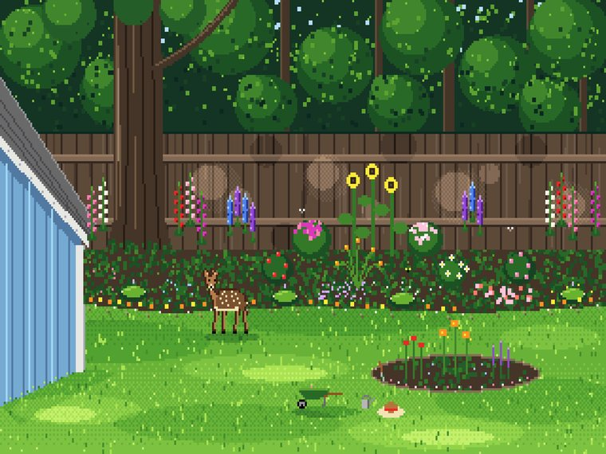


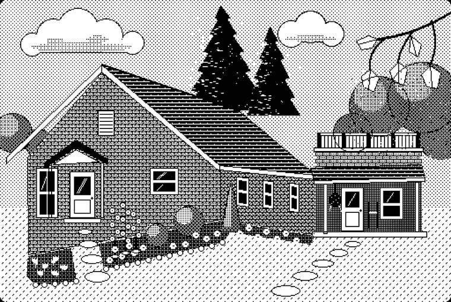


A DOS paint program
First experiments with fpaint.py, a period-limited paint program (VGA mode 13h, EGA, CGA, early Mac).


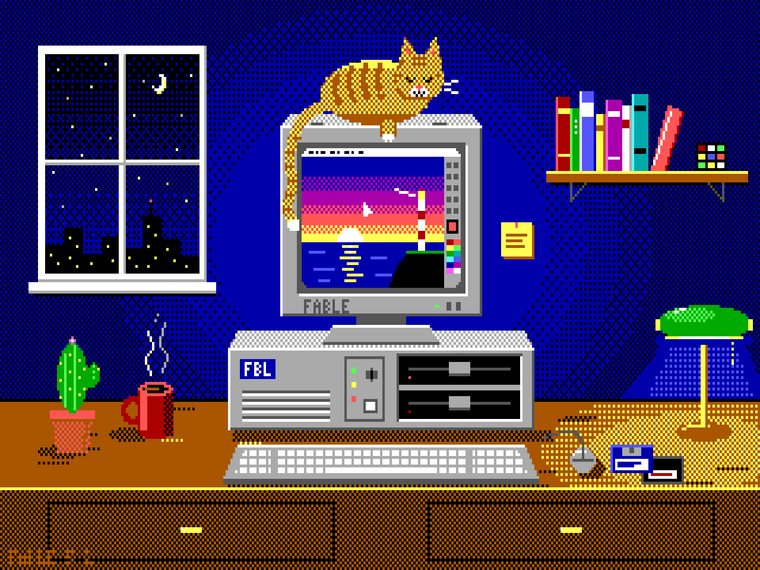